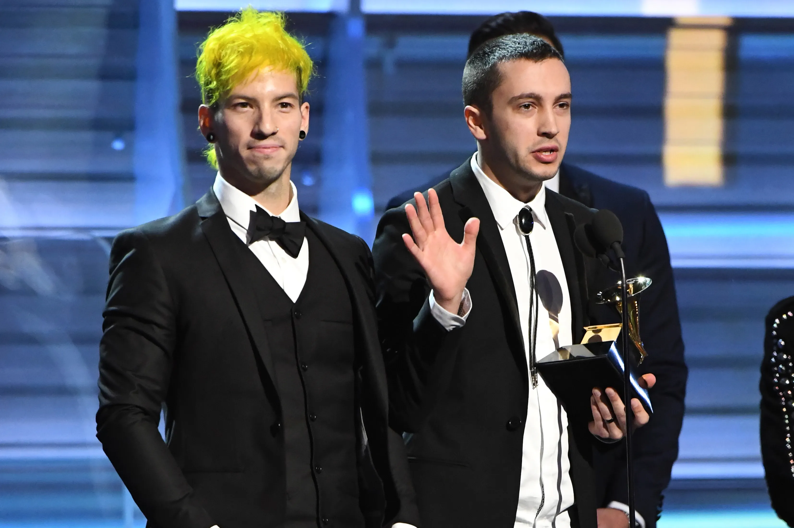
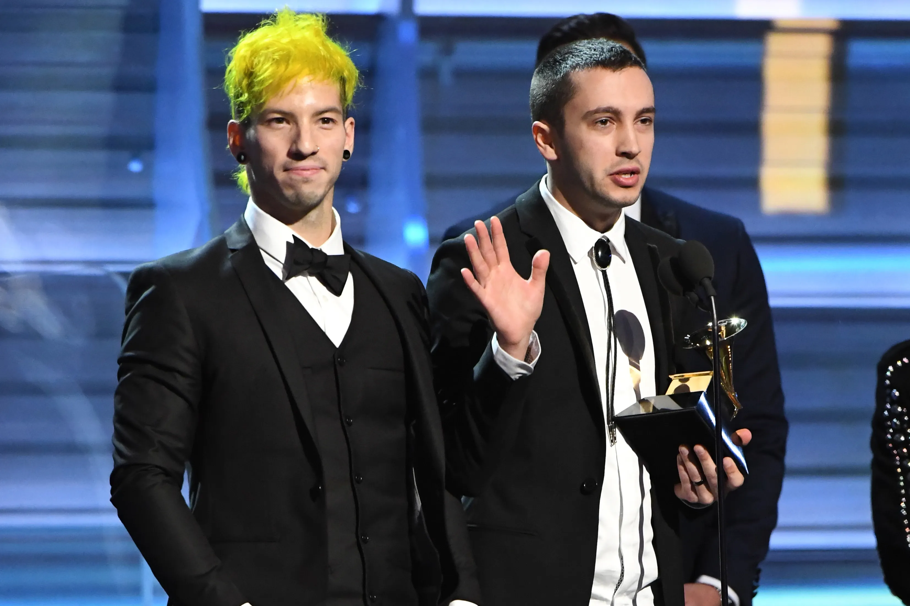

Bibliografia
Twenty One Pilots es un dúo musical estadounidense formado por Tyler Joseph y Josh Dun, conocido por su estilo ecléctico que fusiona elementos de pop, rock alternativo, rap y electrónica. La banda se formó en Columbus, Ohio, en 2009, cuando Joseph y Dun comenzaron a colaborar juntos en la música. Su nombre, Twenty One Pilots, se inspiró en una obra de teatro que Tyler Joseph había leído y que exploraba el concepto de enfrentar el miedo y la presión.
Desde sus inicios, Twenty One Pilots ha sido elogiado por su originalidad y su capacidad para conectar con sus fans a través de letras profundas y emocionales. Han lanzado varios álbumes aclamados por la crítica, incluidos "Vessel" (2013), "Blurryface" (2015) y "Trench" (2018), que han generado múltiples éxitos y han consolidado su estatus como una de las bandas más influyentes del panorama musical actual.
A lo largo de su carrera, Twenty One Pilots ha sido galardonado con numerosos premios, incluidos un premio Grammy al Mejor Dúo/Grupo de Pop por "Stressed Out" en 2017. Además, han realizado giras exitosas en todo el mundo, incluidas giras como "Emotional Roadshow World Tour" y "The Bandito Tour", que han recibido elogios por sus actuaciones en vivo y su producción visual.
En la actualidad, Twenty One Pilots sigue siendo una fuerza creativa en la música pop, lanzando nueva música y colaboraciones mientras continúan explorando y expandiendo su sonido característico. Su capacidad para reinventarse y su compromiso con la autenticidad los han convertido en una de las bandas más queridas y respetadas por fans y críticos por igual.

 
